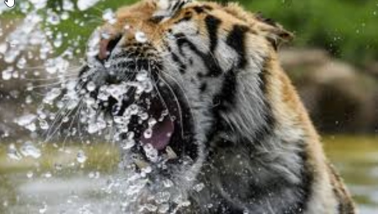

Rövid ismertetés
A macskafélék (Felidae) az emlősök osztályába, azon belül a ragadozók rendjébe tartozó család. Ausztrália (ide később az ember telepítette be őket) és Antarktika kivételével minden kontinensen és a legtöbb szigeten jelen vannak.
Csodás alkalmazkodóképességük és vadásztechnikáik lehetővé tették azt, hogy minden élőhelyen kiválóan boldoguljanak, a trópusi esőerdőktől egészen a kopár sivatagokig. Megjelenésük is sokféle lehet: vannak kis termetű, fáramászó, karcsú vadászok, ugyanakkor hatalmas, erőteljes fajaik is léteznek.
Leírás
Testfelépítés
A macskafélék testfelépítése nagyon hasonló, csontvázuk paraméterei szinte teljesen megegyeznek (ez a fosszíliák alapján történő rendszerezéskor okoz gondot). Méretük azonban jelentősen eltérhet, minden fajuk a környezetéhez és a táplálék méretéhez és erejéhez alkalmazkodott, így a vadmacska, kistestű, karcsú vadász, könnyen elkapja a kisebb madarakat, ezzel szemben az oroszlán nagy és erőteljes, képes a gnúkat és a zebrákat is elejteni.
Csontozat
Fogazat
A macskaféléknek tipikus ragadozó fogazatuk van: elöl a tompább metszőfogak, kicsivel hátrébb a hatalmas szemfog, megint hátrébb a tépőfogak és a tarajos zápfogak, mindezek pedig egy borzasztóan erős állkapocsba ágyazva.
Néhány kivételtől eltekintve, mint például a hiúzok, fogképletük a következő: 3.1.3.13.1.2.1
Fogazat
Bunda és mintázat
A macskák bundájának színe és sűrűsége nagyon eltérő lehet. Mivel a legtöbb macska trópusi, rövid és tömött szőrre van szükségük, hogy ne hevüljenek fel a nagy melegben, de ne ázzanak bőrig az esőerdőkben, vagy a monszun idején. A hidegebb területeken élők szőre lényegesen hosszabb, de ugyanúgy sűrű a hőszigetelés végett.
Bunda és mintázat
Érzékelés
- Szem: A macskafélék érzékszervei közül a legszembetűnőbb a szemük, mely kitűnő látást biztosít nekik. Hatalmas pupillájuk rendkívül érzékeny, könnyedén összehúzódik a fényben, vagy tágra nyílik a sötétben. Kitűnő éjszakai látásukban a tapetum lucidum nevű fényvisszaverő anyag is jelentősen közrejátszik, mely több fényt ver vissza a retinára. Erős éjszakai fényben ettől „világít” a macskák szeme.
- Fül: Másik fontos érzékszervük a nagy és érzékeny fül, mellyel a legkisebb neszt is meghallják, főleg a rágcsálókra vadászó kistestű macskák, például a vadmacska.
- Orr: Szaglásuk is jó, de messze elmarad a kutyafélékétől. A kutyafélékhez viszonyítva orruk rövid, orrüregük kicsi. Ezt ellensúlyozza a szájpadlásukon található Jacobson-szerv (vagy vomeronazális szerv), mellyel tulajdonképpen képesek a „levegőt megízlelni”. Mikor az állat ráncolni kezdi a pofáját, az állát kissé leereszti, a nyelvét pedig kilógatja, akkor beereszti a levegőt a vomeronazális szervébe. Ez az állapot, melyet „tátogásnak” vagy „vigyorgásnak” is neveznek, megegyezik a más állatoknál, például a kutyáknál, lovaknál is megfigyelt flehmen-reakcióval.
Érzékszervek
Ízlelés
Egy 2005-ben elvégzett vizsgálat kimutatta, hogy a macskafélék nem rendelkeznek a T1R2 nevű fehérjével (az egyikkel azok közül, amelyek az édesség ízleléséhez szükségesek); a kapcsolódó (Tas1r2) gén törlődése folytán a leolvasási keret eltolódik, amely transzkripciót eredményez, leállítva az mRNS illetve a fehérje termelődését. A T1R3 nevű fehérje (melynek szintén az édesség ízlelésénél van szerepe) ezeknél az állatoknál is megtalálható és a kapcsolódó ízlelőbimbó is létezik, de inaktív. Mivel ez az egyedi genetikai marker az egész családban megtalálható, feltehetően egy korai ősnél fellépett deléciós mutáció okozza, és nem visszafordítható, így nyilván az egész evolúciós fa (klád) érintett. A legtöbb tudós úgy véli, ez a gyökere annak, hogy a macskák családja egy olyan evolúciós ökológiai fülkévé vált, amely rendkívüli módon specializálódott a vadászathoz és a húsevéshez. Módosult ízlelésük kizárja a növényekben fellelhető cukortartalom érzékelését, megmaradt ízlelő receptoraikat csupán a fehérjében gazdag húsevő étrend stimulálja. Ízlelésük ennek ellenére kifinomultabb a kutyákénál.
Érdekesség - A Liger
A liger apja oroszlán, anyja tigris. Ilyen egyedek a leggyakrabban állatkertekben vagy cirkuszokban születnek. Külsejük inkább az oroszlánéra emlékeztet, halvány tigriscsíkokkal (ritkán pettyekkel). A hím ligereknek néha egy kis sörényük is nő. Szüleiknél jóval nagyobbak, ráadásul hajlamosak az elhízásra. A liger a legnagyobb nagymacska: 3,5 méter hosszú, tömege akár egy szibériai tigrisének a kétszeresét is elérheti. Alig egy tucat él szerte a világon.
A tigrisektől örökölt tulajdonságként általában szereti a vizet.
A Guinness Rekordok Könyve szerint a legnagyobb liger egy Hobbs nevű példány volt; testtömege elérte a 450 kg-ot.[2]
A legnagyobb bejelentett liger a 19. század végén Bloemfonteinben, Dél-Afrikában élt; testtömege állítólag elérte a 798 kg-ot.